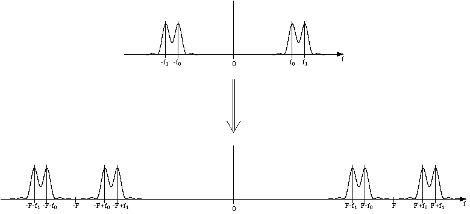

Puisque, dans la quasi-totalit des cas rels, la frquence d'mission
optimale pour une longueur d'antenne donne ne correspond pas au domaine de
frquences du signal mettre, on utilise l'opration de transposition,
i.e. un dcalage (une translation) en frquences. Cette opration se
ralise grce une simple multiplication du signal (de frquence moyenne
f) sortant de l'opration de FSK, par un signal sinusodal de frquence
F. On obtient ainsi un signal dont les composantes ont pour frquences
F-f et F+f  . Pour prendre une place moins
importante sur la bande de frquences, on filtre une de ces deux
composantes. Dans notre cas, l'opration de filtrage est effectue grce
un circuit passe-bande LC en sortie du transposeur, et la frquence retenue
est ici de F-f. Afin d'obtenir finement l'attnuation de l'autre
composante, on utilise un analyseur de spectre, et l'on rglel'inductance
variable du circuit de filtrage LC jusqu' ce qu'une composante domine
nettement l'autre (rapport entre les deux de l'ordre de 10db).
. Pour prendre une place moins
importante sur la bande de frquences, on filtre une de ces deux
composantes. Dans notre cas, l'opration de filtrage est effectue grce
un circuit passe-bande LC en sortie du transposeur, et la frquence retenue
est ici de F-f. Afin d'obtenir finement l'attnuation de l'autre
composante, on utilise un analyseur de spectre, et l'on rglel'inductance
variable du circuit de filtrage LC jusqu' ce qu'une composante domine
nettement l'autre (rapport entre les deux de l'ordre de 10db).

Aussi, il est noter que les antennes dont nous disposions taient d'une
hauteur d'environ 30cm, ce qui, compare la hauteur thorique idale
pour un signal transmettre d'une frquence de 10MHz, i.e. 7,5m,
est assez peu. En fait, cela n'a pas t trs gnant, si ce ne sont les
quelques bruits supplmentaires ajouts au signal transmis, et qui ont t
plus ou moins limins avec le filtre LC du circuit de transposition du
ct rcepteur.
L'opration de transposition est tout fait inversible, puisque cette
opration est son propre inverse! En fait, en multipliant le signal de
composante F-f par un signal de frquence F, on obtient un signal de
deux composantes relles: f et 2F-f. Il suffit donc, pour rcuprer le
signal initial de frquence f, de filtrer la composante indsirable
l'aide d'un filtre passe-bande LC, filtre qui est situ la sortie du
circuit de transposition du rcepteur.
Enfin, pour complter la maquette, il ne manque plus que l'ajout des
antennes (ce qui, il faut bien en convenir, n'a pas vraiment constitu la
partie la plus difficile de toute l'tude!) et, puisque les signaux
traversent l'atmosphre, un circuit d'amplification du ct du rcepteur
 .
L'amplification se fait aprs transposition, donc sur un signal de
frquence de l'ordre de 1MHz, avec un montage classique amplificateurs
oprationnels.
.
L'amplification se fait aprs transposition, donc sur un signal de
frquence de l'ordre de 1MHz, avec un montage classique amplificateurs
oprationnels.
A la sortie de l'amplificateur, situ aprs la transposition donc, le
signal passe dans le circuit de dmodulation FSK puis dans les botiers de
conversion numrique/analogique. Aussi, afin de rgler finement la
frquence de transposition inverse (qui est, rappelons-le, peu prs la
mme que la frquence de transposition, c'est--dire 8MHz dans notre cas)
sur le montage rcepteur, on observe avec un oscilloscope la fois le
signal provenant du circuit metteur, avant transposition, et celui sur le
circuit rcepteur, aprs transposition, et l'on rgle la frquence du
transposeur ct rcepteur (grce une inductance variable) jusqu' galer
les frquences de ces deux signaux. Puis, l'on rgle enfin, si ncessaire,
la frquence de rfrence du circuit dmodulateur FSK (grce, cette fois,
une rsistance variable), jusqu' ce que la frquence du signal modul soit
accroche, et que le circuit rgnre donc un signal dmodul proche de
celui qui avait t transmis initialement (ce dernier rglage, celui du
dmodulateur FSK, a normalement dj t effectu lors de l'tape
prcdente, c'est--dire au moment o la maquette ne comportait pas encore
de transposition).
Le signal numrique rgnr est quasiment comme celui initialement
transmis, sauf que les angles des "marches d'escalier" sont beaucoup plus
arrondis. Pour palier cette caractristique pouvant devenir gnante, le
botier dispose d'un circuit spcialis dnomm "squarer" que nous avons
utilis.
Il reste encore un lment que nous pensons bon de relater ici. En effet, aprs avoir effectu tous les rglages et avoir pos les deux sondes de l'oscilloscope sur les deux signaux numriques, celui du circuit metteur avant modulation d'une part, et celui rcupr par le circuit rcepteur aprs dmodulation d'autre part, nous avons vu que la restitution du signal numrique semblait tout fait correcte, alors que le reste du circuit rcepteur ne semblait pas vouloir "accrocher" sur ce signal (et par exemple reconnatre les mots de synchronisation). Toutefois, en y regardant de plus prs, l'on voyait clairement que le signal numrique restitu "tremblait" horizontalement, i.e. que sa frquence oscillait, mme si ce phnomne ne se montrait pas d'une grande amplitude. Le problme venait, en fait, de ce que la boucle de phase du dmodulateur FSK n'accrochait pas assez vite sur les frquences successives que prenait le signal modul. Pour remdier cela, il suffisait donc d'augmenter le gain du mlangeur du dmodulateur ou, aussi, d'augmenter l'cart entre les deux frquences f0 et f1 du signal modul, et c'est cette dernire solution que nous avons retenue (nous sommes pass d'un cart de f1-f0 = 50 kHz 80 kHz). Il faut cependant prendre garde ne pas carter trop ces frquences, sinon le dmodulateur n'accrochera plus du tout! Ds lors, notre montage a fonctionn "merveilleusement bien", c'est--dire que les signaux demeuraient correctement transmis et interprts, mme lorsque nous avons cart l'metteur du rcepteur d'environ 1m (le GSM n'a qu' bien se tenir!)...